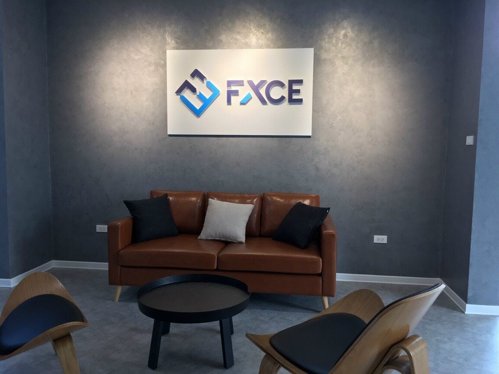

Nhu cầu làm biển quanh Duy Tân, Cầu Giấy
Khu vực Duy Tân, Cầu Giấy, Hà Nội có nhiều cửa hàng mặt phố, văn phòng, quán ăn uống, cafe, nhà thuốc, phòng khám và dịch vụ bán lẻ. Khi làm biển, cần ưu tiên khả năng nhìn từ xa, độ sáng buổi tối và bố cục đủ rõ để khách đi ngang nhận ra nhanh.
- Biển công ty, bảng tên văn phòng, backdrop logo lễ tân cho tòa nhà văn phòng.
- Biển showroom, cửa hàng công nghệ, cửa hàng dịch vụ cần mặt tiền gọn và chuyên nghiệp.
- Biển cafe, quán ăn văn phòng cần dễ nhìn buổi trưa/tối và có điểm nhận diện rõ.
- Sửa biển cũ: thay chữ, thay LED, đổi nhận diện, gia cố khung hoặc làm lại mặt biển.
Khu vực phục vụ
Nhận tư vấn và báo giá theo ảnh mặt tiền quanh các tuyến/khu vực sau:
- Duy Tân
- Trần Thái Tông
- Thành Thái
- Tôn Thất Thuyết
- Cầu Giấy
- Xuân Thủy
- Trung Kính
- Yên Hòa
- Nguyễn Phong Sắc
- Hoàng Quốc Việt
Mẫu biển tham khảo theo ngành
Các ảnh dưới đây dùng để tham khảo kiểu mặt tiền, ánh sáng và bố cục. Khi báo giá thực tế cần chốt kích thước, vật liệu, vị trí lắp và điều kiện thi công.



Liên kết dịch vụ liên quan
Câu hỏi thường gặp
Có nhận làm biển quảng cáo tại Duy Tân không?
Có. Bông Sen Trắng nhận tư vấn, sản xuất, lắp đặt và sửa biển quảng cáo quanh Duy Tân, Trần Thái Tông, Thành Thái, Tôn Thất Thuyết và khu Cầu Giấy.
Khu văn phòng Duy Tân nên làm loại biển nào?
Tùy vị trí. Văn phòng thường dùng bảng tên, logo chữ nổi, backdrop lễ tân; showroom/cửa hàng có thể dùng alu chữ nổi, hộp đèn LED hoặc biển vẫy.
Có làm biển trong tòa nhà văn phòng không?
Có. Có thể làm bảng tên công ty, biển phòng ban, logo lễ tân, biển chỉ dẫn và decal kính.
Muốn báo giá nhanh cần gửi gì?
Cần ảnh vị trí lắp, kích thước, địa chỉ tòa nhà, file logo và yêu cầu vật liệu hoặc mẫu tham khảo.